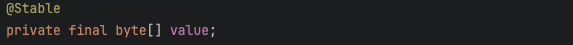
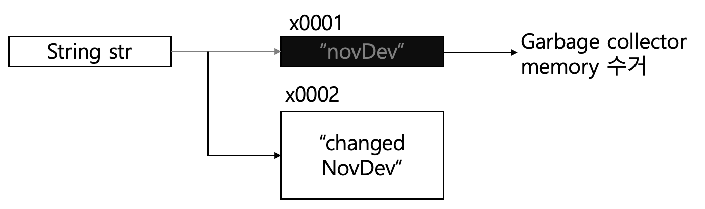
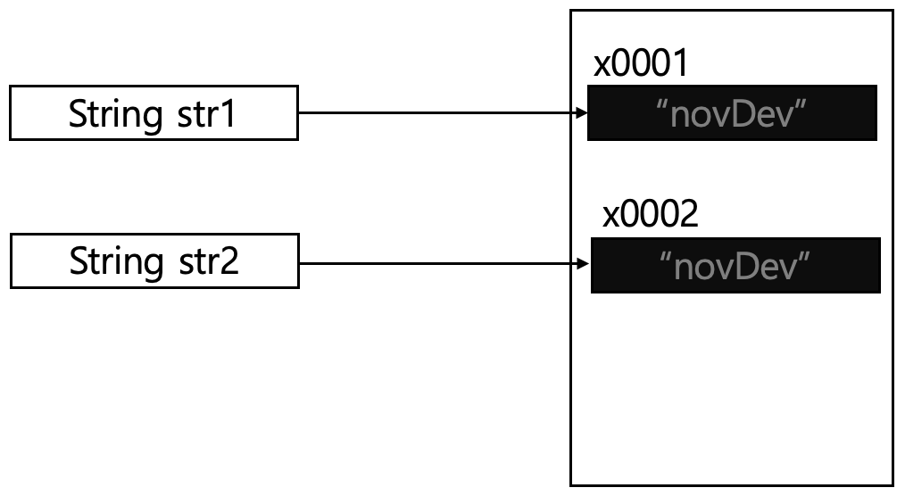
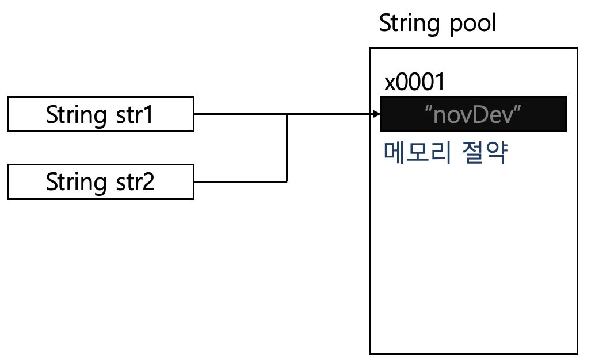

* 다음 포스팅은 개인적인 공부 내용을 기록하는 용도로 작성한 글 이기에 잘못된 내용을 포함하고 있을 수 있습니다.
String 메서드 파트는 지속적으로 추가해 나갈 예정입니다.
String
#문자열 선언 방법
자바에서 문자열은 객체의 주소를 저장하고 있는 참조형 타입이다.
따라서 문자열 변수에는 객체의 주소를 가리키는 참조값이 들어 가야만 한다.
하지만 문자열은 매우 빈번하게 사용되는 자료형 이기에 "문자열 리터럴" 형태로 참조형 변수에 초기화 해 주어도 자바 컴파일러가 자동으로 코드를 객체 인스턴스를 생성하는 형태로 변환해 준다.
public static void main(String[] args) {
// #1 객체 생성을 이용한 문자열 선언
String str = new String("novDev");
System.out.println("str = " + str);
// #2 문자열 리터럴을 이용한 문자열 선언
String str2 = "novDev"
System.out.println('str2 = " + str2);
}str = novdev
str2 = novdev
#문자열은 불변 객체이다
자바 언어에서 String은 불변 객체로 설계되어 있다. String 객체의 내부 코드를 보면 보면 문자열은 priavate final로 선언된 "문자의 배열" 형태로 정의 되어 있다. 예를 들어 "novDev" 라는 문자열은 실제로 'n', 'o', 'v', 'D', 'e', 'v' 라는 6개의 문자 배열로 구성된다. (JAVA9 버전 이후로는 byte 배열 형태로 바뀌었다.)

따라서 한 번 문자열을 선언하면 문자열을 다른 값으로 변경하는 것은 불가능하다.
아래 코드를 보면 str 문자열 변수의 내부 값이 novDev에서 changedNovDev 문자열로 변경된 것 처럼 보이지만 실제로는 기존 값 ("novDev") 은 유지한 채 새로운 문자열 객체 ("changedNovDev") 를 생성한 뒤 반환하는 방식으로 동작한다.
더 이상 참조 변수에 의해 참조되지 않은 문자열 ("novDev") 은 GC에 의해 메모리 공간이 수거된다.
public static void main(String[] args) {
String str = "novDev";
System.out.println("Before str = " + str);
str = "changedNovDev";
System.out.println("After str = " + str);
}
#String이 불변 객체로 설계된 이유
그렇다면 자바의 문자열은 어째서 불변 객체로 설계되어 있는 것일까? 굳이 GC가 메모리를 수거하게 하는 번거로운 작업을 거치면서 까지 말이다.
그 이유는 자바 내부에서 "문자열 풀" 이라는 기능을 통해 문자열 연산 최적화를 진행하기 때문이다.
자바는 동일 값을 참조하는 인스턴스를 문자열 풀 이라는 공간에 메모리를 할당해 둔다.
그런데 만약 문자열이 불변 객체가 아니라면 한 참조 변수에서 문자열의 값을 변경하면, 해당 문자열을 참조하고 있는 모든 참조 변수 내부의 문자열 값이 변경되는 현상이 발생하기 때문이다.
*문자열 풀을 사용하지 않았을 경우 메모리 공간

*문자열 풀을 사용한 경우 메모리 공간

StringMethod
#indexOf
| indexOf(String target) | 파라미터로 전달된 문자열의 위치 인덱스를 반환한다. (해당 타깃 문자열이 존재하지 않는다면 -1 리턴) |
| indexOf(String target, int index) | 탐색 하고자 하는 문자열의 index 위치 부터 target 문자열을 탐색한다. |
indexOf 예제
문자열 내부의 특정 문자의 개수를 모두 카운트
public static void main(String[] args) {
String sentence = "hello, novv";
String target = "v";
int pos = sentence.indexOf(target);
int targetCount = 0;
while (pos > -1) {
targetCount++;
pos = sentence.indexOf(target, pos + 1);
}
System.out.println("target : " + targetCount);
}target : 2
#toCharArray
| str.toCharArray | 입력받은 문자열을 문자 배열 형태로 반환해 주는 메서드이다. |
toCharArray 예제
public class Main {
public static void main(String[] args) {
String str = "novlog";
char[] charArr = str.toCharArray();
for (char c : charArr) {
System.out.print(c + " ");
}
}
}StringBuilder
String 객체는 앞서 설명했듯이 불변 객체 이다. 따라서 한 번 객체를 생성하면 문자열 내부의 값을 변경할 수 없다. 반면에 StringBuilder는 가변 객체로 가변 크기의 문자 배열을 사용해 문자열을 저장한다.
그렇기에 문자열을 연결 혹은 수정할 때 마다 객체를 새로 생성하지 않기에 메모리와 성능 면에서 효율적이다.
특히 JAVA 언어로 알고리즘 문제를 풀이하는 경우 다음과 같은 상황에서 String 객체 대신 StringBuilder 객체를 사용하는 것이 좋다.
#StringBuilder의 사용이 권장되는 상황
1. 반복문 내부 에서 문자를 연결하는 상황
2. 조건문을 통해 동적으로 문자열을 조합하는 경우
3. 복잡한 문자열의 특정 부분을 변경하는 경우
따라서 StringBuilder를 사용해 문자열 연산을 수행한 뒤 마지막에 String 객체로 변환 하여 성능을 최적화 시키는 것을 권장한다.
#StringBuilder 관련 메서드
StringBuilder sb = new StringBuilder();
// 문자열 추가
sb.append("novDev");
System.out.println("sb = " + sb);
// 문자열 삽입
sb.insert(6, " Blog");
System.out.println("insert = " + sb);
// 문자열 삭제
sb.delete(6, 12);
System.out.println("delete = " + sb);
// 문자열 뒤집기
sb.reverse();
System.out.println("reverse = " + sb);
// String 변환
String string = sb.toString();
System.out.println("string = " + string);[Result]
sb = novDev
insert = novDev Blog
delete = novDev
reverse = veDvon
string = veDvon